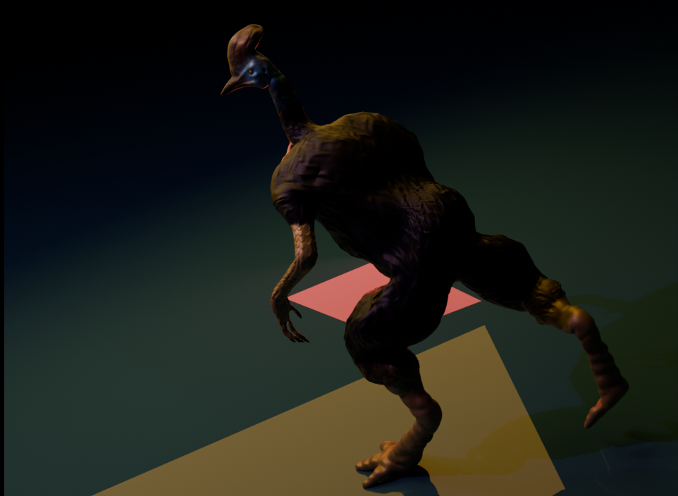

Mallory the Cassowary

Above is a sculpted anthropomorphic cassowary who is a part of a larger story of mine in development.

Made in Blender, this character of mine was inspired by the anthropomorphic creatures in Pirate101. In said game, the player is able to recruit a plethora of companions on their pirate crew who are often antrhopomorphic characters of birds, to primates, and to reptiles. I tried my hand at this by basing off my character of a southern cassowary. Despite the bird's reputation as dangerous, Mallory herself is a ship medic for her crew.